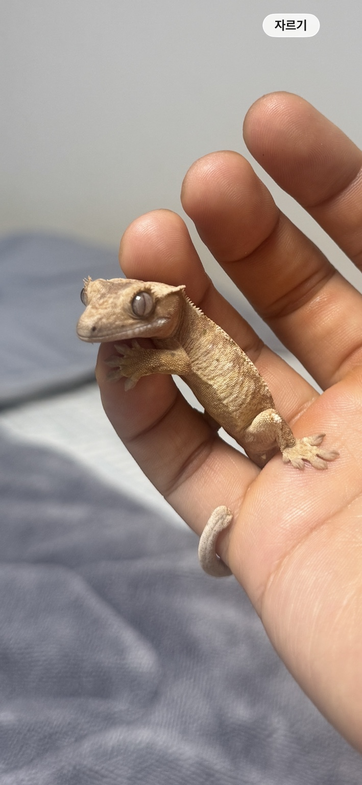
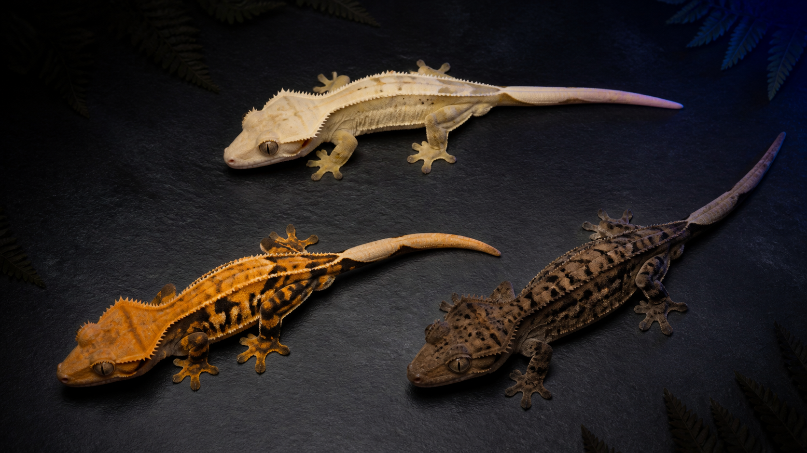

01
가격을 모르고
같은 모프의 가격대조차 판매처마다 따로 확인해야 합니다.
적어도 크레스티드 게코 시장에서는,
이미 가격이 정해져 있습니다.
풀네임은 ‘사 나움’. 분당에서 데려온,
정말 고맙고 귀여운 친구입니다.


업계에서는 이 외형적·유전적 특성을 ‘모프’라고 부릅니다. 같은 크레스티드 게코도 전혀 다른 가격이 됩니다.
우성과 열성의 조합을 계산하고, 원하는 특징을 가진 개체를 교배해 모프의 완성도를 높입니다.
같은 모프의 가격대조차 판매처마다 따로 확인해야 합니다.
어디에 어떤 개체가 있는지, 처음 입문한 사람은 더 찾기 어렵습니다.
취향을 설명할 언어가 없으면 검색어조차 만들기 어렵습니다.
하지만 주말에 시간을 내야 하고, 처음 파충류를 입문하려는 사람에게는 진입 자체가 부담이 됩니다.
다양한 가격 정보를 한눈에 보고, 내 취향의 모프와 가까운 매장을 함께 찾는 서비스입니다.
초보자도 예쁜 특징부터 선택한 뒤, 해당 모프의 가격 분포와 판매처를 확인할 수 있습니다.
매물 정보와 실제 사진을 매칭해, 숫자만으로 놓칠 수 있는 개체의 매력을 함께 보여줍니다.
동물다락·피들·파사모와 가격을 제시하는 판매처의 정보를 모으고, Supabase에 정리해 서비스에 반영합니다.
위치 기반 검색에서는 가격을 제공하지 않는 매장까지 보여줍니다. 비교의 범위를 온라인 밖으로 넓혔습니다.
현재 MVP에서 구현한 가장 인기 있는 첫 종
가격과 모프 정보가 풍부한 다음 확장 후보
메인 종부터 검증하며 탐색 경험을 넓힐 계획
가격 정보가 존재하는 종으로 꾸준히 확장